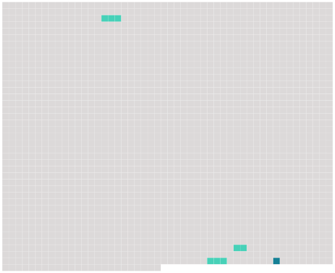

Longueur nb maillons : 4 mentions |
 |
Les officiers de l'état civil qui auraient procédé à la célébration des mariages contractés par des fils n'ayant pas atteint l'âge de vingt-cinq ans accomplis, ou par des filles n'ayant pas atteint l'âge de vingt-un ans accomplis, sans que le consentement des pères et mères, celui des aïeuls et aïeules, et celui de la famille, dans le cas où ils sont requis, soient énoncés dans l'acte de mariage, seront, à la diligence des parties intéressées et du commissaire du Gouvernement près le tribunal de première instance du lieu où le mariage aura été célébré, condamnés à l'amende portée par [l'article 192] , et, en outre, à un emprisonnement dont la durée ne pourra être moindre de six mois. [82 phrases]
[Article 192] [2 phrases]
Les peines prononcées par [l'article précédent] , seront encourues par les personnes qui [y] sont désignées, pour toute contravention aux règles prescrites par l'article 165, lors même que ces contraventions ne seraient pas jugées suffisantes pour faire prononcer la nullité du mariage. |
 |
La ressource peut être téléchargée sur la page Ortolang
Si vous avez des questions ou vous voyez des erreurs, merci d'envoyer un mail à silvia.federzoni89@gmail.com
Site développé par S. Federzoni (contact)